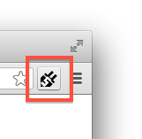

SublimeSocket + TypeScript ~さよなら! node.js強依存~ 編
概要
node.jsを貶める意図は無いです。
下記の続きです。
謎レシピ:TypeScriptのSublimeSocketフィルタ書いた
どーーーにもnode-tailの遅さに納得いかない。ファイルの更新拾うのが亀過ぎる
+
wsがOriginパラメータ持ってなくて大変めんどくさい
+
この2つのモジュールに依存するのどうなの？ 残念なんじゃないの？
と思っていた昨今、
案の定、知り合いに使ってもらったら環境構築の時点でいろいろ躓いたので、
脱node.jsして、tsc以外のnode.js依存の部分を、すべてChromeのExtensionにおんぶに抱っこしてもらう事にしました。
俺の使い方が悪いんです。nodeはいいコです。
前提
・node.jsは結局使う
tscを内部で使っています。
よって、node.jsとtscがインストールしてある必要があります。
・Chromeに、SublimeSocket/tool内のExtensionをインストールしてもらう必要がある
nodeのwsとtailの代替になります。Developerモードでフォルダからインストしてもらう想定。
https://github.com/sassembla/SublimeSocket/tree/master/tool/chromeClient
・SublimeSocketが必要
はい。
現在0.8.5
https://github.com/sassembla/SublimeSocket
動画
百文は一動画にしかず
TypeScriptのファイルを開いて編集するとエラー行が光ったり、エラー詳細がNotifyされたりする。
以前のようなコマンドラインでの入力がほぼ無いのがうれしい。
最初にlogファイルを作り出すために、touch使ってるけど。
スクリーンショット
同一フォルダに入っているところをフォルダ単位でコンパイルされ、クラス名の重複を怒られている時の図
結果
最終的に、Chrome Extensionsで、nodeがやってた上記の内容をすべて肩代わりし、
かつ私的な科学の進歩でいろいろなことができるようになった。
・コンパイルにはtscを使用しているが、nodeとか一切表に出てこない
清々した。
一点、
tscが内部で node 表記でnode実行してるんだけど、Pythonからの実行だと環境変数が継げないので、参っている。
tsc自体に「どこのnodeを渡すのか」とかが指定できると良かったんだけど。
環境変数入れるところからのshellを作る事で解決した。
https://github.com/sassembla/SublimeSocket/blob/master/tool/chromeClient/tscshell.sh
・コンパイルモードが増えた
編集中フォルダのみをコンパイルするFocusモード、
対象のフォルダの中にある.tsをすべてコンパイルするFolderモード、
対象フォルダを含む内包物すべての中の.tsを見つけてきてコンパイルするRecursiveモード（未完どころか未制作）
から選べるようになるそのうち。今は内部の値で、直値でFolderモードに指定してある。
動画の中でもFolderモードにしてある。
・省エネ指向
コンパイル前後をフックする事で、Chromeでのtail自体の処理を、必要な時だけに絞ったりしてる。
SublimeSocketに動作設定を入力する際のファイルの、setReactorのあたり。
https://github.com/sassembla/SublimeSocket/blob/master/tool/chromeClient/TypeScriptFilter.txt
nodeでのtail時よりちょっと省エネです。でんちながもち。
、、、まあ、Chrome自体が、「これなんかめっちゃ電池喰ってないか？」と思う事はある。メモリも。
インストール手順
1.TypeScriptのファイルを適当なフォルダに用意します

2.SublimeTextを入れます
(略)
tsファイルを開くとこんな感じです。シンタックスハイライトとかは、このへん がいい感じです。

3.SublimeSocketを入れます
PackageControlには申請してないので、cloneして落としてください。ST3に向けて作業中です。
masterブランチそのままで良いと思います。
git clone https://github.com/sassembla/SublimeSocket.git
4.Chromeを起動して ChromeExtensionsにSublimeSocketChromeClient プラグインを追加
パッケージ化してないプラグインがSublimeSocketに入ってるので、インストール。
デベロッパーモードにチェックが入っていないと出ないので要チェックや。

場所は、
/Users/ユーーーーーザーーーーーー名/Library/Application Support/Sublime Text 2/Packages/SublimeSocket/tool/chromeClient
chromeClient フォルダを選んで、選択。

できた。 「ファイルのURLへのアクセスを許可する」 にチェック入ってるのを確認してくださいませ。

5. .tsが置いてあるフォルダに、適当な名前でログファイルを作成する
コンソールで、
touch something.log
とかすれば良いと思う。日本語、スペースが含まれるファイル名はやめといたほうがいい。

ここまでで準備完了。
作業する時は、ここから
6.編集したい.tsをSublimeTextで開いて、SublimeSocketをonにする
command + shift + p -> soon とか打てばOK

7. 5で作ったlogファイルをChromeに喰わせる

↓

8.SublimeSocketChromeClient プラグインをOnにする

☆6と8が順番に行われる必要があります。
6でサーバ起動、8でそのサーバに繋ぎに行ってるので。
つなげなかったら落とすとか今度入れよう。
準備完了
これでSublimeTextとChromeが接続されるので、あとは保存するたびにコンパイルが走る。

STのコンソール開く (shift + control + `) と、いろいろコンパイル成功したよーとかエラーだよーとか表示される。

エラー出す内容書いて保存すると、その場に表示される。 necomimiクラスなんか無い！！

エラーは、赤丸のポッチをクリックすると、詳細をNotificationで表示するようにしてある。necomimi、スコープ内に存在しないってよ。

以上。
構造
変なシーケンス図みたいなもので書くと、下記のような感じ。
tscのコンパイル結果をChromeがtailし、WebSocketでSublimeSocketに送付、
Errorの表示などを行っている。
STでの保存に反応して、コンパイルが走る。

今後
プラグイン内で、結局 tscを使っているので、node.js に依存している。
node tscに依存せずにコンパイル、、、は、目指さない方がいいような気がしている。
なんだかんだ追従が面倒くさそうなので。
あと、フォルダ階層を潜りつつコンパイルするようにします。きっと。そのうち。
メモ
・ChromeExtensions側からWbSocketがcloseできない
SublimeSocketの既知のバグ。直す。
closeがSublimeSocket側に来ないんだよなー。WebSocketSharpのCloseはくるんだけどな。
・設定ファイルでいろいろセットできるようにしたい
コンパイルモードが3種あり、
モード切り替え を設定画面にもつ、、とかが出来ると思うんで、やろうかとおもってたんだけど、
localStrage使うしか無さそうで、とても面倒くさくなった。
コード内の値を直に書き換えると良いのでは。
・そろそろrunShellをrunSeqShellとrunKVShellに分けないとなー。
SublimeSocketの中の不整合。
置換系の差が出るはず。バグとしてそのうち気付く気がする。
禁止文字replaceはかかってるので、その辺に追記すれば、、
⇒分けない方がいいって言われたなー。うーん。そだね。
なんかあれば、@toru_inoue まで。